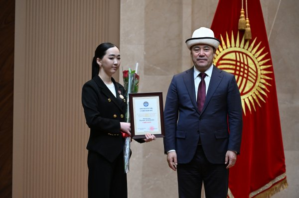
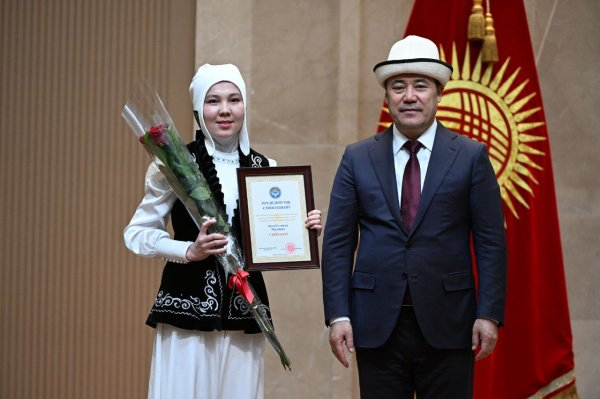

  ОшМПУнун ЭКИ СТУДЕНТИ ПРЕЗИДЕНТТИК СТИПЕНДИЯГА ЖЕТИШТИ 2024-жылдын 16-декабрында өлкөнүн жогорку окуу жайларынын эң мыкты 90 студентине президенттик стипендияларды тапшыруу аземи өттү. Президент Садыр Жапаров студенттерге ийгилик жана жетишкендиктерди каалап, 60 миң сом өлчөмүндө президенттик стипендияларды тапшырды. Аталган стипендияга Ош мамлекеттик педагогикалык университетинин эң мыкты эки студенти ээ болушту. Алар окуу жайдын Музыкалык-педагогикалык факультетинин студенти Нурпери Ысмаилова жана Гуманитардык факультетинин студенти Нурайым Орозбек кызы. “Биз силердин билимиңерди баалоо менен өлкөбүздүн келечегине инвестиция кылып жатабыз деп эсептейбиз. Мамлекет өз өлкөсүнө берилген, өз тарыхын аздектеген жана элибиздин руханий баалуулуктарын сактаган жаштарды ар дайым колдойт. Мен билимге болгон каалоосу күч, өз көз карашы бар, дүйнөнү жакшы жакка өзгөртүүгө умтулган, ар-намыстуу, мекенчил жаштардан көптү күтөм”, - деди Мамлекет башчысы. Белгилей кетсек аталган студенттер окуу жайда түрдүү иш чараларга активдүү катышуусу жана окуудагы жетишкендиктери менен башкаларга үлгү болуп, университеттин жүзү болуп келишүүдө. Президенттик стипендияга сынак жарыялангандан тартып бул студенттер факультет тарабынан көрсөтүлгөн. Анда студенттердин окуудагы, илимдеги, спорттогу жана коомдук, социалдык иштердеги мыкты жетишкендиктери каралган.Сынакка катышуу эрежелерине ылайык стипендианттар бир топ жетишкендиктеринин негизинде бүгүнкү сыйлыкка жетип отурушат.